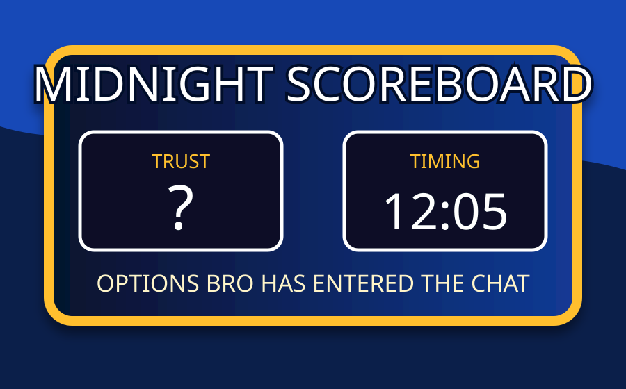

Featured Image
The specific Ingleside co-coaches poster tied to the satirical blog entry.
J. Lewis Blog · Gcode Max Satire
A husband trying to laugh instead of lose his mind over boundaries that get technically acknowledged, emotionally ignored, and then dressed up in midnight timestamps.
The specific Ingleside co-coaches poster tied to the satirical blog entry.

Because apparently the trust department now keeps vampire hours.
Rule one: if the agreement is disclosure, the discovery channel is not the disclosure channel.
You do not rebuild trust by making the phone feel like a CIA folder with a screen protector.
Truth bomb wrapped in comedy
There is a special kind of confusion that hits a husband when he is told, “You have nothing to worry about,” while actively watching behavior that looks like it came straight out of the Worry Starter Kit: Deluxe Marriage Edition.
Because apparently, in this league, “nothing to worry about” does not mean nothing happened. It means something happened, but you are supposed to spiritually levitate above it like a monk with unlimited patience, no memory, and no access to timestamps.
From the husband’s perspective, this is not about one message. It is not about one job link. It is not even about the phrase “Options bro,” although let’s be honest, that phrase did walk into the room wearing a ski mask and carrying a crowbar.
This is about the contradiction. It is about hearing, “Yes, sending Kevin memes or casual messages is not appropriate,” and then later watching the boundary get treated like a wet-floor sign at a trampoline park.
The expectation was already clear: if there is communication with Kevin, disclose it right away. Not twelve hours later. Not after the phone happens to be left out like a clue in a detective movie. Not after the husband discovers it on his own and everybody suddenly wants to debate the definition of “immediate.”
Then comes the midnight job-opening message. Around 12:05 a.m., while physically present with her husband, Jesica reportedly sends Kevin a Facebook message about a job opening. Kevin responds, “So.” Jesica replies, “Options bro.”
Could that be innocent? Sure. A job link is not a crime. A casual phrase is not evidence of cheating. Nobody needs to sprint into accusation land wearing emotional Crocs. But timing matters. History matters. Prior agreements matter. And when the same door has already caused conflict, opening it again at midnight is not exactly a trust-building exercise.
That is like installing a smoke alarm after lighting the curtains.
That is like telling somebody the kitchen is clean while a raccoon in an apron is washing a fork.
That is not transparency. That is fog with Wi-Fi.
The wild part is that this happened while the husband was right there. Same room. Same house. Same marriage. Different communication channel. Nothing says “you have nothing to worry about” like running a side conversation in the emotional background like a suspicious app draining the battery.
And then shortly after, there appeared to be activity around ProtonMail. To be responsible here: a ProtonMail search or account activity does not prove cheating. It does not prove Kevin. It does not prove anything by itself. But when questionable communication happens at midnight and then secure-email activity appears around 1:15 a.m., the husband’s brain does not respond with, “Ah yes, standard administrative workflow.”
No. The brain opens a full investigation with theme music.
The timestamp hires a lawyer. The phone gets a bodyguard. The Wi-Fi router starts sweating. Trust is in the corner filling out a missing-persons report.
And this is where the pattern department enters the building.
Last week, it was reportedly “I just asked him two questions.” Okay. Two questions. Very lightweight. Very innocent sentence. Very “nothing to see here.” Except the way it came out was not, “Hey, I communicated with Kevin earlier today like we agreed I would disclose.” It came out by leaving the phone where the husband could find it twelve hours later.
That is not disclosure. That is a scavenger hunt with marriage consequences.
The week before that, the husband reportedly found texts on his own and then discovered messages between them had also been deleted the same day. Again, deleted messages do not automatically prove cheating. But deleted messages are not trust vitamins. Deleted messages do not walk into a marriage and say, “Good news, everyone, this should make things clearer.” Deleted messages walk in wearing a hoodie, avoid eye contact, and ask where the exits are.
So now the husband is being asked to believe three things at once: it was nothing, trust me, and please ignore the fact that every time you learn something, it is because you discovered it yourself.
Brother, that is not reassurance. That is emotional Sudoku.
That is the issue. Not ownership. Not control. Not paranoia. Accountability. When two people make an agreement and one person says, “Tell me right away if communication happens,” then the other person does not get to redefine “right away” as “whenever the evidence feels emotionally ready to be discovered.”
Privacy is normal. Everybody deserves space. But secrecy is different. Privacy says, “I am a whole person.” Secrecy says, “I am hiding facts because disclosure would create accountability.” Those are not cousins. Those are two different zip codes.
Trust does not die because of one message; it dies when the explanation needs more protection than the truth.
The problem is not that a job link exists. The problem is that the job link arrived wearing the uniform of a pattern: late timing, prior conflict, no immediate disclosure, discovery instead of honesty, and then a whole emotional courtroom where the husband has to prove why the obvious looks obvious.
A man can be emotionally intelligent and still notice when the math is doing cartwheels. He can avoid accusations and still say, “This looks bad.” He can love his wife and still say, “This behavior is confusing, painful, and not aligned with what we agreed to.”
So here is the serious point underneath all the sarcasm: trust is not rebuilt by technicalities. Not by “it was just a job link.” Not by deleted context. Not by private accounts. Not by selective disclosure. Not by asking someone to ignore the exact behavior that created the concern.
Trust is rebuilt when behavior matches the agreement consistently, clearly, and without the other person having to discover the truth like they are dusting for fingerprints in their own marriage.
Because “nothing to worry about” only works when the actions look like nothing to worry about. Otherwise, it is not reassurance. It is comedy.